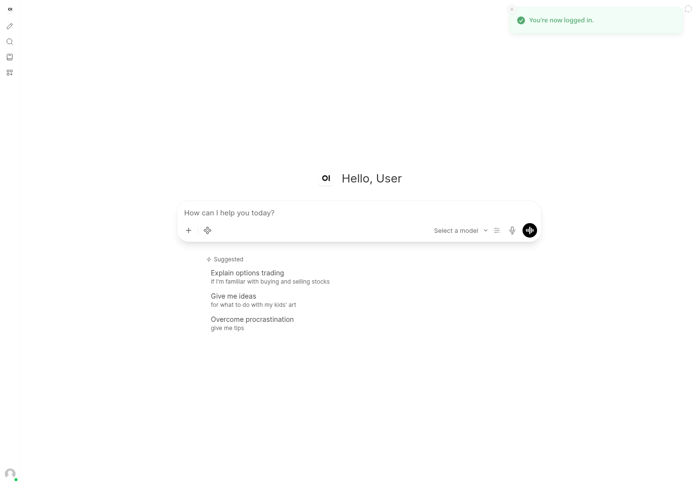
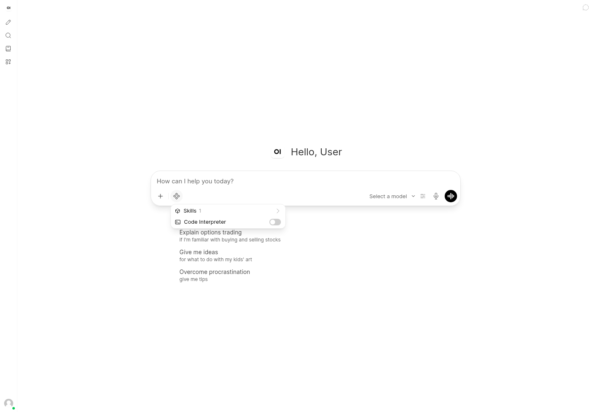
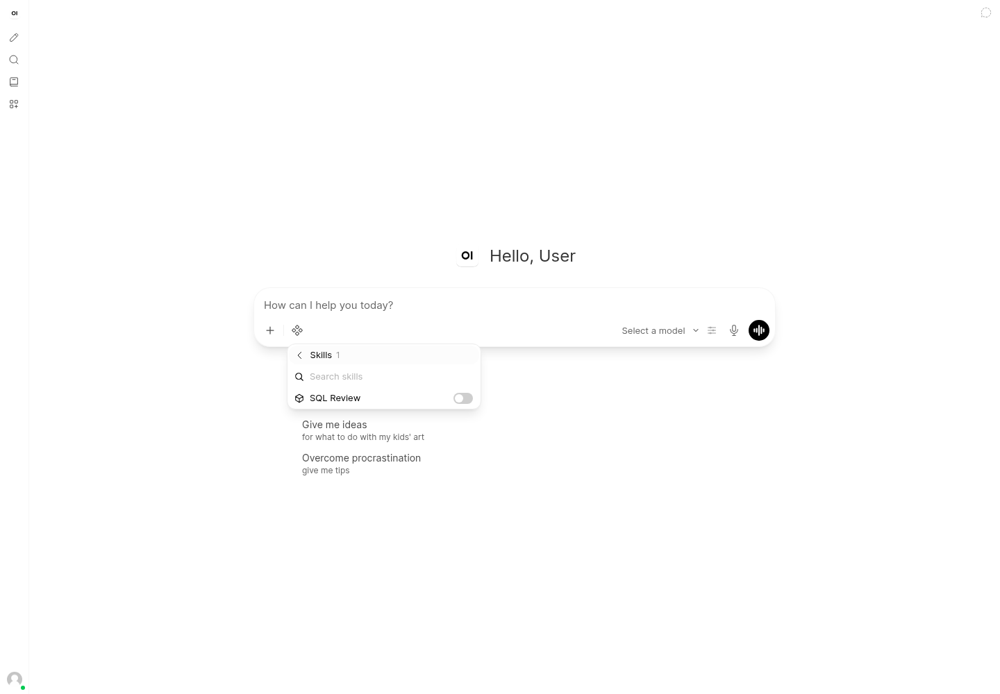
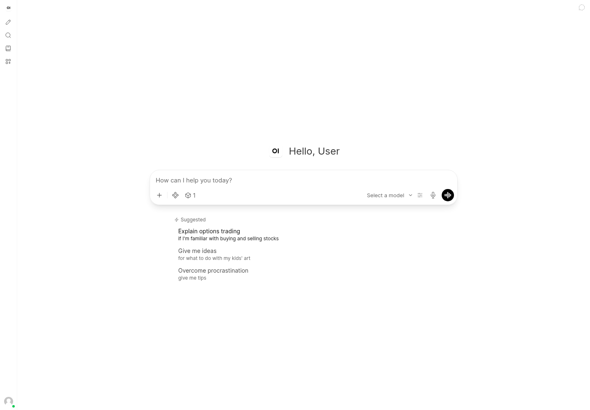
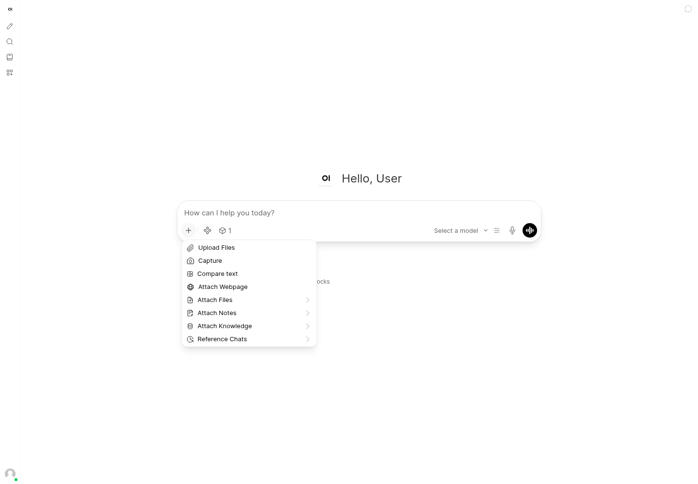
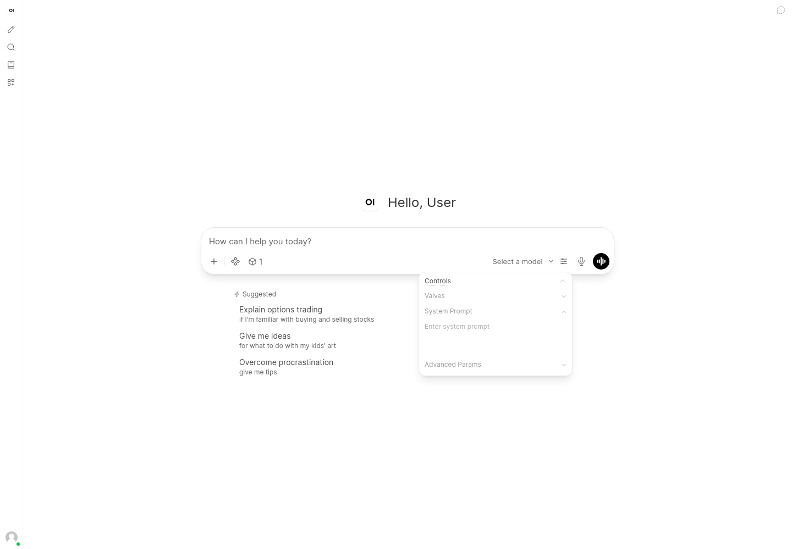
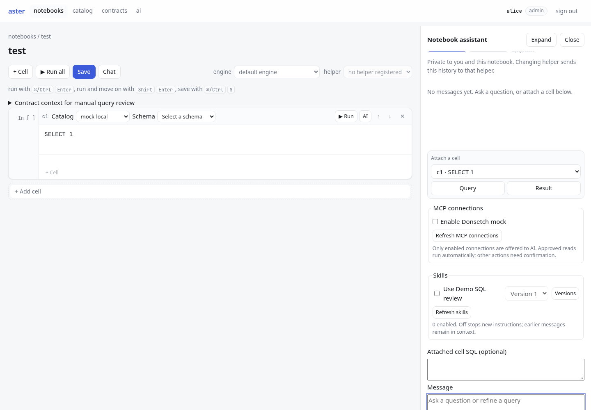

Actual local Chromium captures, 1440 × 1000, November 8, 2026. Open WebUI 0.13.0 at localhost:8082. Synthetic SQL Review skill; no model or MCP execution. Screens show a new conversation, not a generated exchange.
Aster direction: keep the message box anchored at the bottom; use a compact toolbar with Attach, Skills (count), and Tools (count). Open searchable toggle popovers on demand. Put version changes and refresh inside those popovers; leave tool confirmation visible in the conversation.
The new conversation starts with one message box and a short toolbar.

Skills and other capabilities appear only when the integrations control opens.

One compact row per skill with an on/off switch; search lives inside the picker.

The selected skill remains visible in the menu without expanding the composer.
Closing the picker leaves an icon and count instead of the complete skill configuration.

The plus button groups attachment choices separately from integrations.

System prompt and advanced parameters live in a separate popover.

Persistent attachment, MCP and skill sections push the message box to the bottom of a 1000-pixel viewport—even with only one skill.
